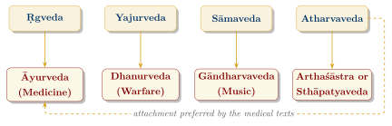

Chapter 10: The Four Upavedas: The Applied Sciences and the Veda¶
Invocatory Verse
dharme cārthe ca kāme ca mokṣe ca bharatarṣabha
yad ihāsti tad anyatra yan nehāsti na tat kvacit
On dharma, wealth, pleasure and liberation, O bull of the Bharatas,
what is here is found elsewhere; what is not here is found nowhere.
— Mahābhārata 1.56.33 (critical edition)
10.1 The Scheme of the Upavedas¶
The term upaveda (“subsidiary Veda”) denotes a group of practical sciences that later tradition attached to the four Vedas, so as to give them Vedic standing. Whereas the Vedāṅgas served the Vedic texts themselves, the Upavedas are sciences of the world: medicine, warfare, music, and either polity or architecture. The scheme is post-Vedic; it appears in texts such as the Caraṇavyūha, and the lists vary:
-
Āyurveda — medicine; attached to the Ṛgveda in the Caraṇavyūha, but to the Atharvaveda in the medical texts themselves;
-
Dhanurveda — archery and warfare; attached to the Yajurveda;
-
Gāndharvaveda — music and the performing arts; attached to the Sāmaveda;
-
Arthaśāstra (polity) or Sthāpatyaveda (architecture) — attached to the Atharvaveda.
This chapter is concerned with the scheme itself: where it comes from, what it claims, and what it shows about the way Brahmanical scholars ordered knowledge. The sciences have their own volumes in this series—Āyurveda in Volume 13, music, dance and drama in Volume 9 (Saṅgīta–Nāṭya), architecture in Volume 16 (Vāstu–Śilpa), polity in Volume 18 (Rājanīti and Dharmaśāstra) and warfare in Volume 20 (Yuddha and Dhanurveda)—and are described here only in outline (Figure 10.1).

The scheme belongs to a wider effort to arrange all learning around the Veda. The Yājñavalkya Smṛti (1.3) counts fourteen “seats of knowledge” (vidyāsthāna): the four Vedas, the six Vedāṅgas, Purāṇa, Nyāya, Mīmāṃsā and Dharmaśāstra. The Viṣṇu Purāṇa (3.6) adds Āyurveda, Dhanurveda, Gāndharva and Arthaśāstra to make eighteen, and the sixteenth-century Advaitin Madhusūdana Sarasvatī, in his Prasthānabheda, used these eighteen headings to survey every branch of learning as an aid, direct or indirect, to the Veda. The Upavedas are the part of this system that reached furthest from the ritual.
10.2 Vedic Antecedents¶
The idea of calling a body of practical lore a “Veda” is older than the Upaveda lists. In the horse sacrifice, the cycle of narratives recited over ten days (Section 8.7) declares on successive days that the Ṛgveda, the Yajurveda, the Atharvan and Āṅgirasa lore, the knowledge of snakes, the lore of other beings, sorcery, itihāsa, purāṇa and the Sāmans are “the Veda” (Śatapatha Brāhmaṇa 13.4.3), and the list of subjects in the Chāndogya Upaniṣad (7.1.2) places grammar, calculation, the knowledge of portents, of snakes and of the stars beside the four Vedas (Section 14.10). Late Vedic culture thus already treated many kinds of specialist knowledge as Veda in a wider sense.
There are also real continuities of content, though none amounts to a line of descent. The healing charms of the Atharvaveda share vocabulary, named diseases and some plants with classical medicine (Section 5.7). The Sāmaveda is the oldest documented Indian tradition of sacred song, and the Nāradīya Śikṣā relates its tones to those of secular music (Section 4.6). The Ṛgveda has a hymn to the warrior’s weapons—armour, bow, bowstring, quiver, chariot and arrows (RV 6.75)—and the Atharvaveda war charms for the king’s army (Section 5.6). The measured construction of altars and ritual enclosures, codified in the Śulbasūtras (Section 7.7), and the domestic rites for a new house addressed to Vāstoṣpati (Section 9.4) stand at the beginning of the architectural tradition; and the royal consecrations and the purohita’s counsel to the king (Section 14.5) belong to the prehistory of Indian political thought.
10.3 The Four Sciences in Brief¶
10.3.1 Āyurveda¶
Āyurveda (āyus, “life” + veda) is the classical Indian system of medicine. Its medical texts present it as a limb of the Atharvaveda (Suśruta Saṃhitā, Sūtrasthāna 1.6), but classical Āyurveda took shape around the beginning of the Common Era. The Caraka Saṃhitā (redacted c. 100 BCE–200 CE and completed by Dṛḍhabala), the Suśruta Saṃhitā (in its present form by c. 500 CE) and Vāgbhaṭa’s Aṣṭāṅgahṛdaya (c. 600 CE) form the “great triad” (bṛhattrayī) of its literature. They divide medicine into eight branches—internal medicine, surgery, diseases of the head, paediatrics, toxicology, the treatment of possession and mental illness, rejuvenation and virility—and their central theories, the three doṣas, the seven bodily tissues and a rational therapeutics based on diet, regimen and drugs, are new. Some scholars have argued that early Buddhist and śramaṇa healers played an important part in their formation (Zysk 1991).
Health and Safety Note
This section describes the history and ideas of a traditional medical system; it is not medical advice. The effectiveness and safety of Āyurvedic treatments must be judged by modern clinical evidence, which for most remedies is limited. Some Āyurvedic products, especially mineral and metal preparations (rasaśāstra, bhasma), have been found to contain dangerous levels of lead, mercury and arsenic (Saper et al. 2004, 2008). Consult a qualified medical practitioner before using any remedy.
10.3.2 Dhanurveda¶
Dhanurveda (dhanus, “bow” + veda) is the science of archery and, more broadly, of arms and warfare. No early independent treatise survives. Its traditions are known from chapters of the Agni and Viṣṇudharmottara Purāṇas, from the descriptions of weapons, training and battle formations in the epics, from the military books of Kauṭilya’s Arthaśāstra, and from medieval compilations. A common classification divides weapons into those released from the hand (mukta, such as arrows and javelins), those held (amukta, such as swords and maces), those both thrown and retained (muktāmukta), and those released by machines (yantramukta); some lists have instead weapons “released by mantra” (mantramukta), reflecting the epic idea of divine weapons.
10.3.3 Gāndharvaveda¶
Gāndharvaveda, named after the Gandharvas, the celestial musicians, is the science of music, and by extension of dance and drama. Its foundational text is the Nāṭyaśāstra ascribed to Bharata, compiled over several centuries (c. 200 BCE–200 CE), which treats drama, dance, music, staging and the theory of aesthetic experience. Its doctrine that a performance produces in the spectator a “taste” (rasa) of one of eight kinds—to which later theorists, championed by Abhinavagupta (c. 950–1016), added a ninth, the tranquil—became one of the most original Indian contributions to aesthetics. Mataṅga’s Bṛhaddeśī, which first defines rāga, and Śārṅgadeva’s Saṅgītaratnākara (13th century) carried the musical tradition forward. The gāndharva music of the Nāṭyaśāstra is, however, a system distinct from Sāman chant (Section 4.6).
10.3.4 Arthaśāstra and Sthāpatyaveda¶
The fourth place is given in some lists to polity, in others to architecture. The Arthaśāstra ascribed to Kauṭilya, a composite text of c. 50 BCE–300 CE, treats government, law, diplomacy and war as a science of its own, with only a nominal debt to the Veda. Sthāpatyaveda (sthāpatya, “the builder’s art”), also called Vāstuśāstra or Śilpaśāstra, covers architecture, town-planning, sculpture and iconography. Its earliest systematic treatments appear in Varāhamihira’s Bṛhatsaṃhitā (6th century CE) and in works such as the Mānasāra, the South Indian Mayamata and King Bhoja’s Samarāṅgaṇasūtradhāra (11th century). Central to these texts is the vāstupuruṣa maṇḍala, a square grid, commonly of \(8\times8\) or \(9\times9\) cells, over which a cosmic being is imagined lying, with deities assigned to the cells and Brahmā at the centre. The texts combine practical knowledge of building with religious symbolism and rules of auspiciousness; modern claims that vāstu rules channel “cosmic” or “magnetic” energies are not found in them and have no scientific basis.
10.4 Summary¶
The Upaveda scheme is best read as an act of classification rather than as a history. Its lists disagree about which science belongs to which Veda, and even about which sciences qualify; the medical writers preferred the Atharvaveda, whose healing charms gave them a natural ancestor, while the Caraṇavyūha pairs medicine with the Ṛgveda. What the lists share is a claim: that the practical sciences, whatever their actual sources, Vedic and non-Vedic, belong within a single order of knowledge whose root is the Veda. That claim gave medicine, music, warfare, polity and building a place in Brahmanical learning and a share in its prestige. It did not determine their content, which each science developed on its own terms over many centuries, as the volumes devoted to them describe.